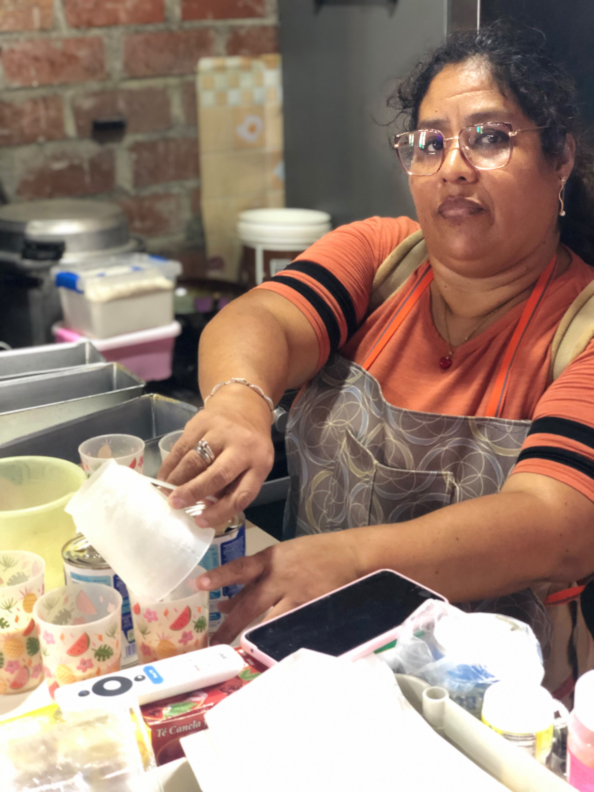

Dedicación
Prestamos atención a los detalles durante la preparación de cada pedido.
 Carmen
Postres caseros
Carmen
Postres caseros
Carmen Postres Caseros
Somos un emprendimiento de repostería casera que prepara cada pedido con dedicación para acompañar tus momentos especiales.
Descubre nuestros postres
Carmen Postres Caseros nació durante la pandemia, cuando los pedidos en línea se convirtieron en una nueva forma de acercar los postres a las familias. Con dedicación y amor por la repostería, este emprendimiento creció para endulzar momentos especiales con el sabor casero de cada preparación.
Somos un emprendimiento dedicado a preparar postres caseros para compartir en familia, celebrar ocasiones especiales o disfrutar de un antojo.
Nuestra propuesta incluye opciones como kekes, cupcakes, brownies y tortas, según el catálogo disponible.
El secreto de un buen postre está en prepararlo con amor

Queremos que cada visita y cada pedido sean una experiencia agradable.
Prestamos atención a los detalles durante la preparación de cada pedido.
Ofrecemos distintas opciones dulces para diferentes gustos y ocasiones.
Buscamos atender tus consultas de forma amable y clara.
Ofrecer postres caseros preparados con dedicación y brindar una atención amable para acompañar los momentos especiales de nuestros clientes.
Crecer como emprendimiento de repostería y llegar a más personas, manteniendo el cuidado en las preparaciones y una atención cercana.
Gracias por visitarnos
Nos encantará ayudarte a elegir algo rico para compartir o celebrar.